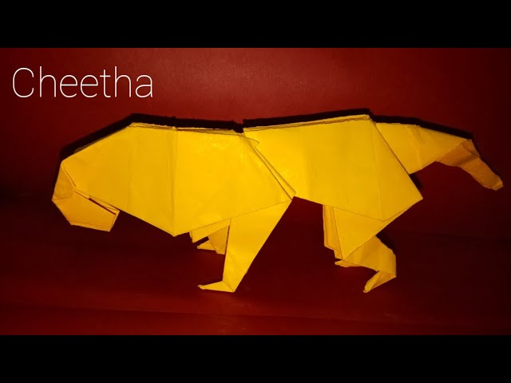

Origami Designs by Bhumik Chandra
About Me
Follow Me
Some Intresting Facts About Origami
Origami is derived from two Japanese words: Ori (folded) and Kami (paper).
Before that, the art was called “orikata” (folded shapes).
An ancient Japanese legend says if you fold one thousand cranes you will be granted a wish.

How to make a lion with Origami
- 1. NEARLY ALL WILD LIONS LIVE IN AFRICA, BUT ONE SMALL POPULATION EXISTS ELSEWHERE.
- Lions do most of their hunting at night as their eyes have adapted to the dark
and this gives them a huge advantage over their prey.
- Lions are the only known cat species where individuals roar together -
with even young cubs joining in with their mews.
The calling sequence usually lasts about 40 seconds.
- Lions can eat up to 40kg of meat in a single meal - around a quarter of their body weight.

- Cheetahs Are the World’s Fastest Land Mammal
- Cheetahs Don’t Roar, They Meow and Purr
- Unlike most other big cats, cheetahs hunt in the daytime.
They climb a termite mound or small hill and use their sharp vision to locate prey